Chapter 3 Optimization
Recall the MLE example in Chapter 1. Consider a random sample \(X_1, \ldots, X_n\) of size \(n\) coming from a univariate distribution with density function \(f(x| \theta)\), where \(\theta\) is a parameter vector. The MLE \(\hat\theta_n\) of the unknown parameter \(\theta\) is obtained by maximizing the loglikelihood function \[ l(\theta) = \sum_{i=1}^n \log f(X_i | \theta) \] with respect to \(\theta\). Typically, \(\hat\theta\) is obtained by solving the score equation \[ l'(\theta) = \sum_{i=1}^n \frac{\partial}{\partial \theta} \log f(X_i; \theta) = 0, \] i.e., the derivative of the loglikelihood function equated to zero. From mathematical statistics, it is known that, under certain regularity conditions, \[\begin{align*} \mathbb{E}\frac{\partial}{\partial \theta} \log f(X; \theta) &= 0,\\ \mathbb{E}\frac{\partial}{\partial \theta} \log f(X; \theta) \left[\frac{\partial}{\partial \theta}\ log f(X; \theta) \right]^{\top} &= - \mathbb{E} \frac{\partial^2}{\partial \theta \partial \theta^{\top}} \log f(X; \theta). \end{align*}\] The expectation in the second equation is known as the Fisher information \(I(\theta)\), a nonnegative definite matrix. Large sample results state that, as \(n \to \infty\), \(\hat\theta_n\) is consistent for \(\theta\) and \(\sqrt{n} (\hat\theta_n - \theta)\) converges in distribution to \(N(0, I^{-1}(\theta))\). The asymptotic variance of \(\hat\theta\) can be estimated by inverting the observed Fisher information matrix \(l''(\hat\theta_n)\).
More generally in Statistics, M-estimators are a broad class of extremum estimators obtained by maximizing an data dependent objective function. Both non-linear least squares and maximum likelihood estimation are special cases of M-estimators. The definition of M-estimators was motivated by robust statistics, which contributed new types of M-estimators. When the objective function is smooth, the M-estimator can be obtained by solving the corresponding “score” equation. Clearly, optimization or roo-finding are very important in Statistics.
3.1 Univariate Optimizations
Optimization and root finding are closely related. Consider maximization of a smooth and differentiable function \(g(x)\). A necessary condition at the maximum is \(f(x) = g'(x) = 0\). Univariate illustrations help to gain insights about the ideas.
3.1.1 Bisection Method
The bisection method repeatedly bisects an interval and then selects a subinterval in which a root must lie for further processing. It is a very simple and robust method, but relatively slow.
The method is applicable for solving the equation \(f(x) = 0\) for the real variable \(x\), where \(f\) is a continuous function defined on an interval \([a, b]\) and \(f(a)\) and \(f(b)\) have opposite signs. This method is illustrated with an animation using the package animation (Xie 2017).
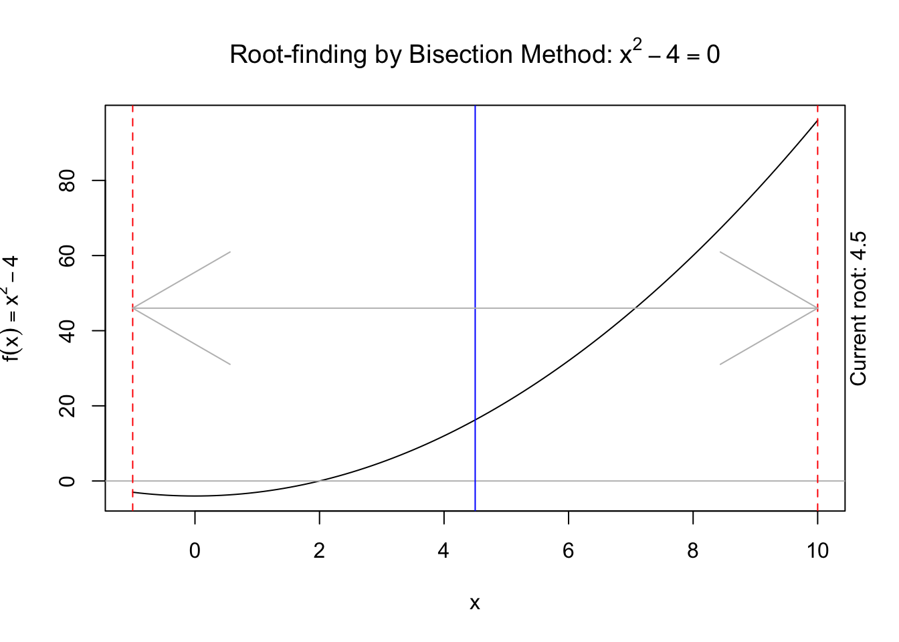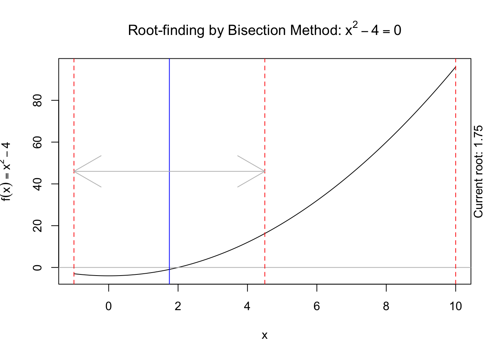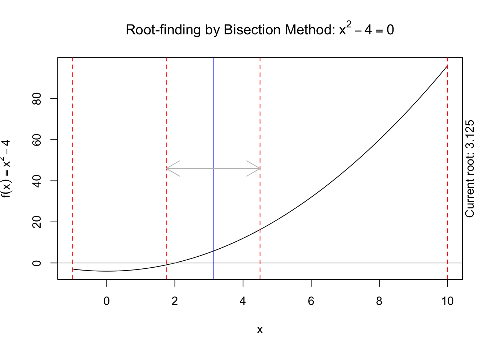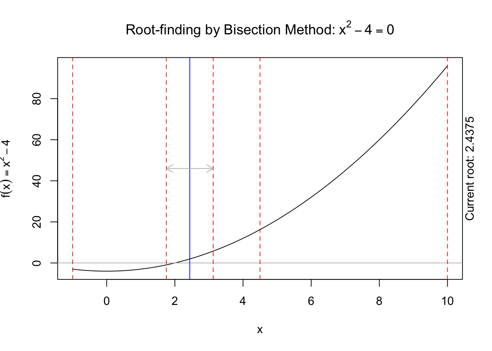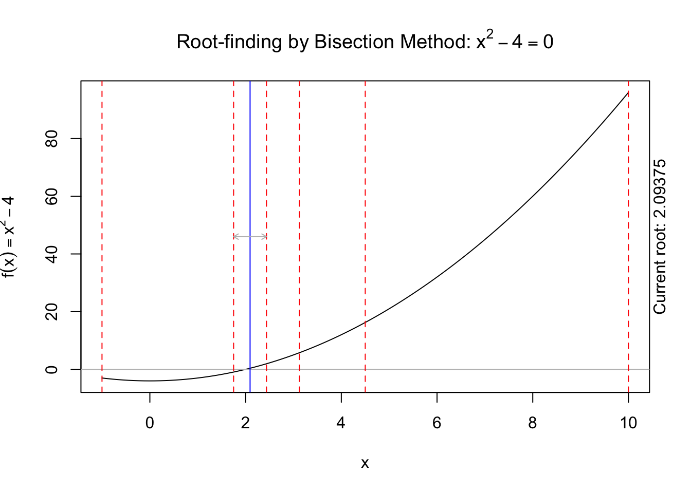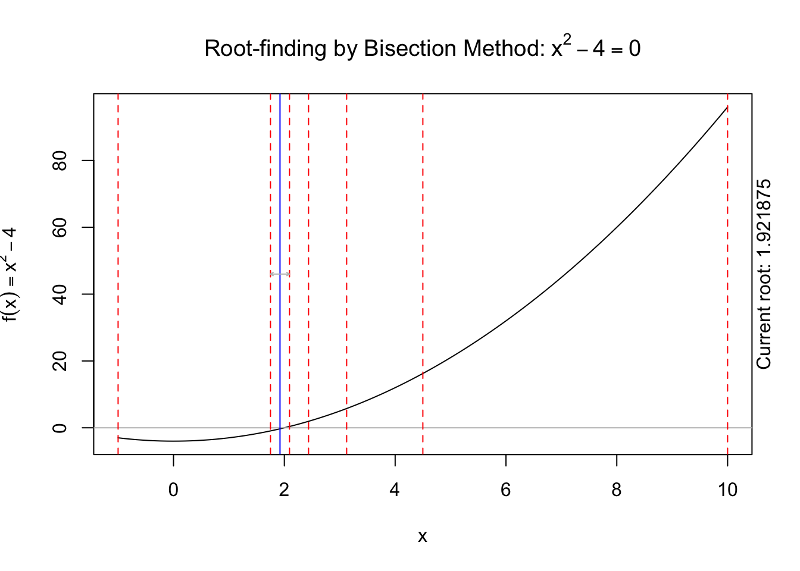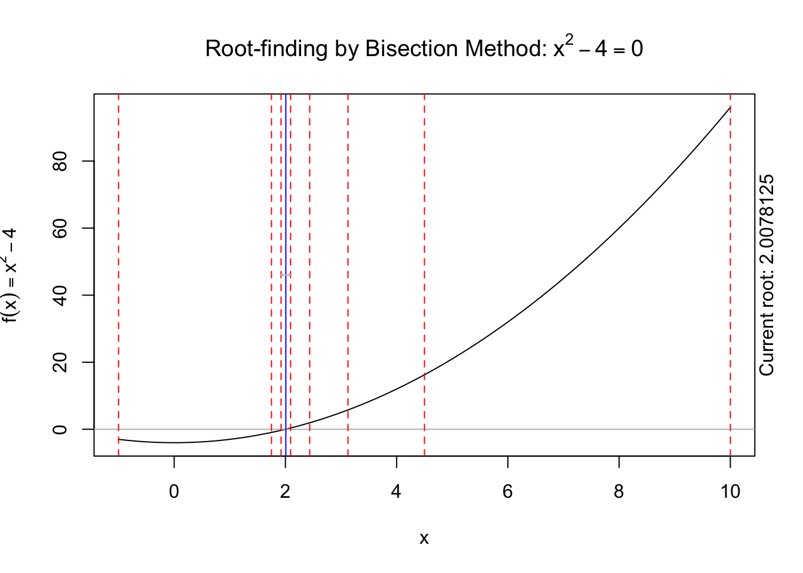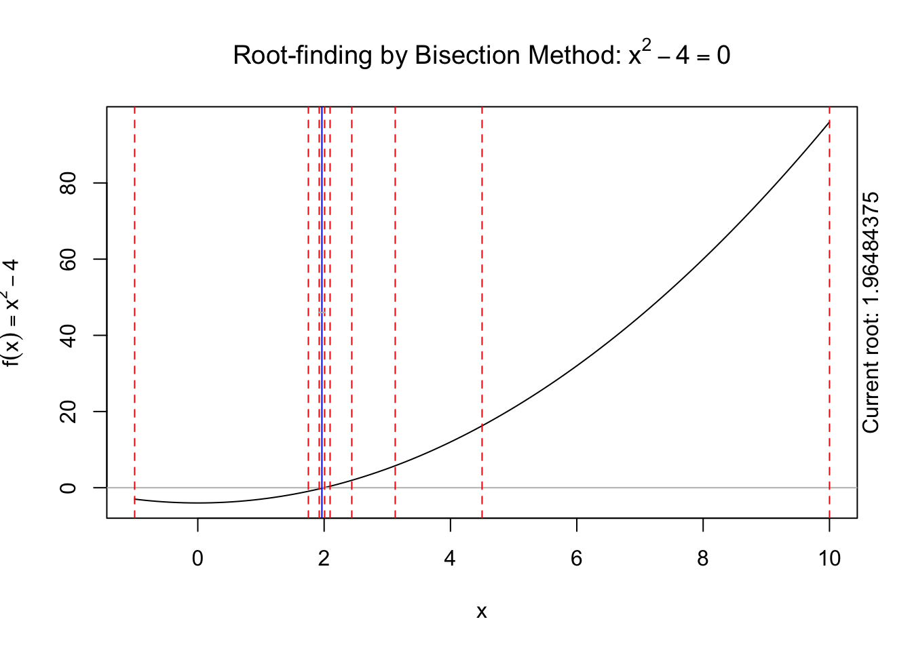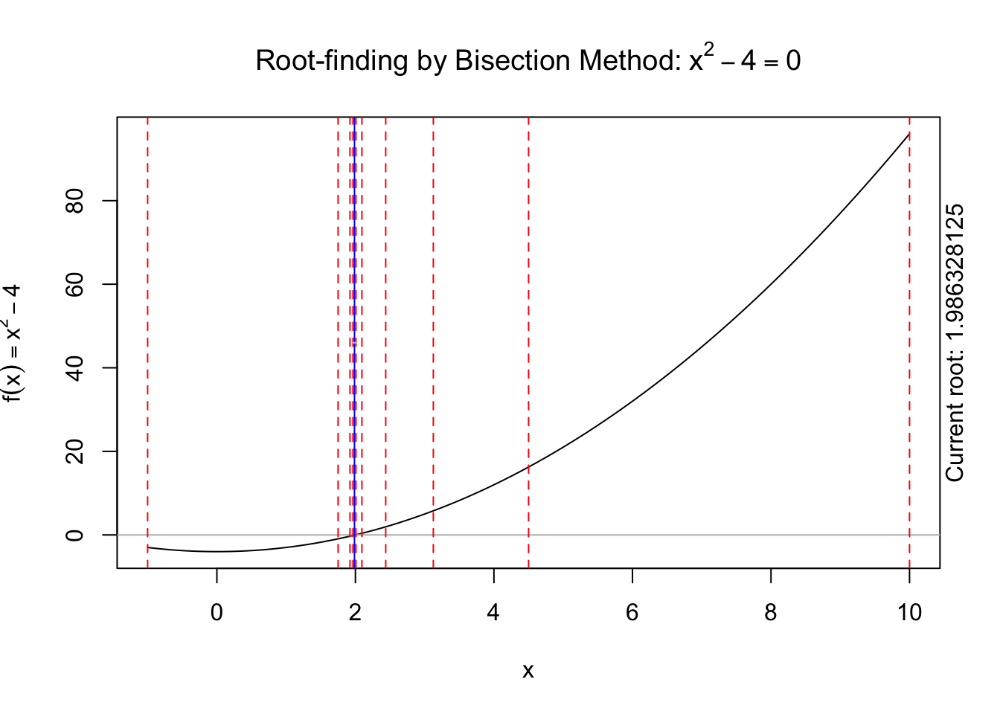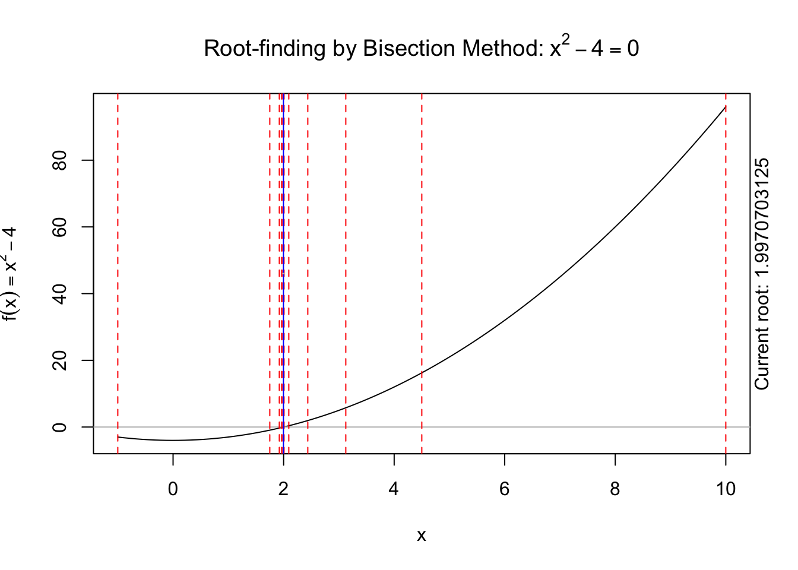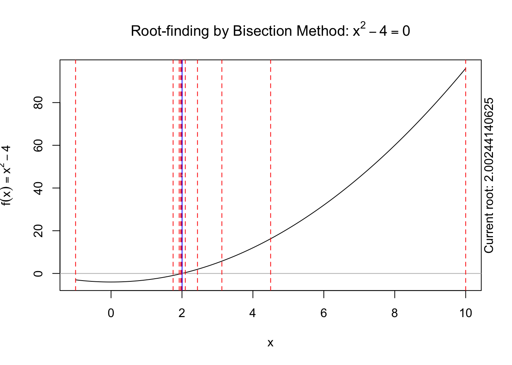
3.1.2 Newton’s Method
A fast approach to find roots of a differentiable function \(f(x)\). The methods starts from some initial value \(x_0\), and for \(t = 0, 1, \ldots\), compute \[\begin{align*} x_{t+1} = x_t - \frac{f(x_t)}{f'(x_t)} \end{align*}\] until \(x_t\) converges. The method is based on a linear expansion of \(f(x)\). The method is also known as Newton–Raphson iteration. It needs an initial value \(x_0\). If \(f(x) = 0\) has multiple solutions, the end result depends on \(x_0\).
Applied to optimization of \(g\), this method requires the Hessian \(g''\), which can be difficult to obtain, especially for multivariate functions. Many variants of Newton’s method avoid the computation of the Hessian.
For example, to obtain MLE with likelihood \(l(\theta)\), Fisher scoring replaces \(-l''(\theta_t)\) with \(I(\theta_t)\). Generally, one uses Fisher scoring in the beginning to make rapid improvements, and Newton’s method for refinement near the end.
The secant method approximates \(f'(x_t)\) by \[\begin{align*} \frac{f(x_t) - f(x_{t-1})}{x_t - x_{t-1}}. \end{align*}\] Given initial values \(x_0\) and \(x_1\), the iteration is \[\begin{align*} x_{t+1} = x_t - \frac{f(x_t)(x_t- x_{t-1})}{f(x_t) - f(x_{t-1})}. \end{align*}\]
3.1.3 Fixed Point Iteration
A fixed point of a function is a point whose evaluation by that function equals to itself, i.e., \(x=G(x)\).
Fixed point iteration: the natural way of hunting for a fixed point is to use \(x_{t+1}=G(x_t)\).
Convergence: \(|x_{t+1}-x_{t}|=|G(x_t)-G(x_{t-1})|\leq \lambda |x_t - x_{t-1}|\leq \lambda^{t}|x_1-x_0| \rightarrow 0\), as \(t\rightarrow \infty\). It follows that \(\{x_t\}\) convergent to a limit \(x^*\).
Application in root finding: for solving \(f(x)=0\), we can simply let \(G(x) = x + \alpha f(x)\), where \(\alpha \neq 0\) is a constant.
Required Lipschitz condition: \(|x - y + \alpha [f(x) - f(y)]| \le \lambda|x-y|\), for some \(\lambda \in [0,1)\) and for all \(x,y\in [a,b]\). This holds if \(|G'(x)|\leq \lambda\) for some \(\lambda \in [0,1)\) and for all \(x\in [a,b]\), i.e., \(|1+\alpha f'(x)|\leq\lambda\). (use mean value theorem.)
Newton’s methods: \(G(x) = x - f(x)/f'(x)\). So it is as if \(\alpha_t\) is chosen adaptively as \(\alpha_t=-1/f'(x_t)\). This leads to a faster convergence order (quadratic).
3.2 Exercises
- Consider estimating the location parameter of a Cauchy distribution with a known scale parameter. The density function is \[\begin{align*} f(x; \theta) = \frac{1}{\pi[1 + (x - \theta)^2]}, \quad x \in R, \quad \theta \in R. \end{align*}\] Let \(X_1, \ldots, X_n\) be a random sample of size \(n\) and \(\ell(\theta)\) the log-likelihood function of \(\theta\) based on the sample.
Show that \[\begin{align*} \ell(\theta) &= -n\ln \pi - \sum_{i=1}^n \ln [1+(\theta-X_i)^2], \\ \ell'(\theta) &= -2 \sum_{i=1}^n \frac{\theta-X_i}{1+(\theta-X_i)^2}, \\ \ell''(\theta) &= -2 \sum_{i=1}^n \frac{1-(\theta-X_i)^2}{[1+(\theta-X_i)^2]^2}, \\ I_n(\theta) &= \frac{4n}{\pi} \int_{-\infty}^\infty \frac{x^2\,\mathrm{d}x}{(1+x^2)^3} = n/2, \end{align*}\] where \(I_n\) is the Fisher information of this sample.
- Set the random seed as \(20180909\) and generate a random sample of size \(n = 10\) with \(\theta = 5\). Implement a loglikelihood function and plot against \(\theta\).
- Find the MLE of \(\theta\) using the Newton–Raphson method with initial values on a grid starting from \(-10\) to \(20\) with increment \(0.5\). Summarize the results.
- Apply fixed-point iterations using \(G(\theta)=\alpha \ell'(\theta) + \theta\), with scaling choices of \(\alpha \in \{1, 0.64, 0.25\}\) and the same initial values as above.
- First use Fisher scoring to find the MLE for \(\theta\), then refine the estimate by running Newton-Raphson method. Try the same starting points as above.
Comment on the results from different methods (speed, stability, etc.).
References
Xie, Yihui. 2017. Animation: A Gallery of Animations in Statistics and Utilities to Create Animations. https://CRAN.R-project.org/package=animation.